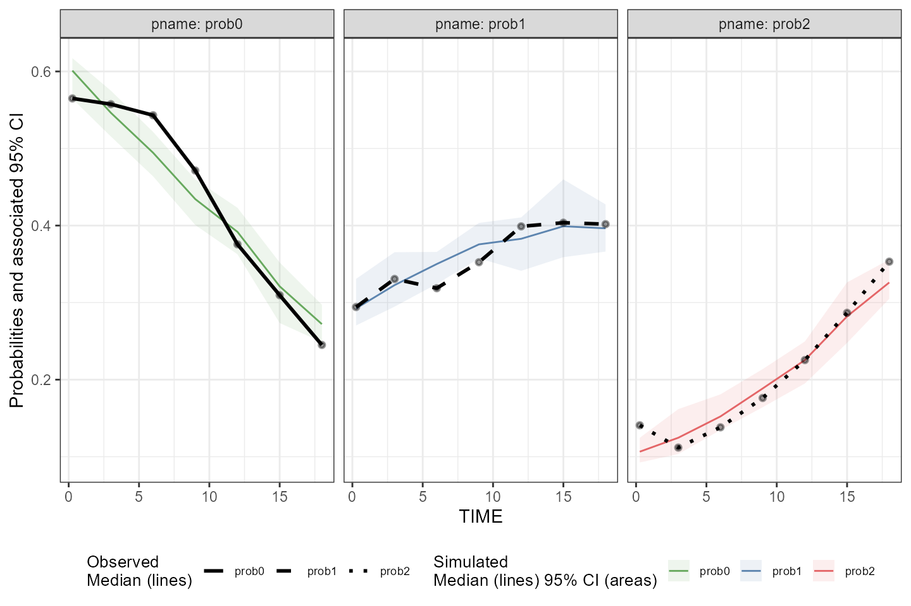
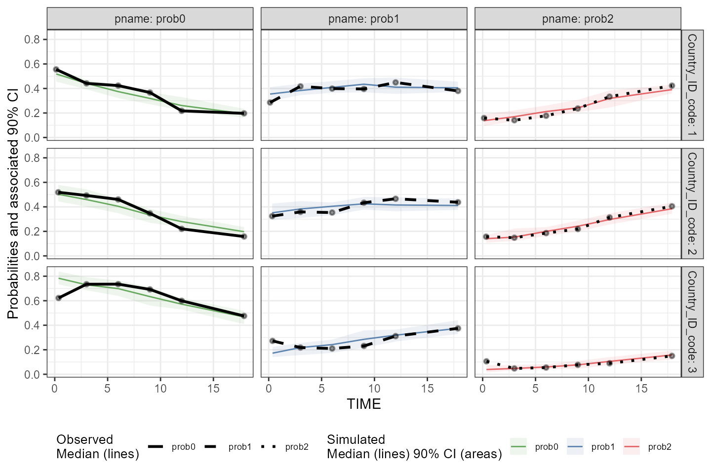
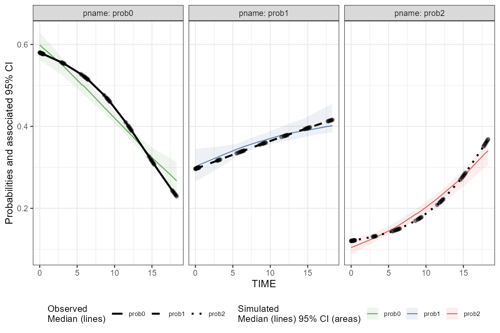
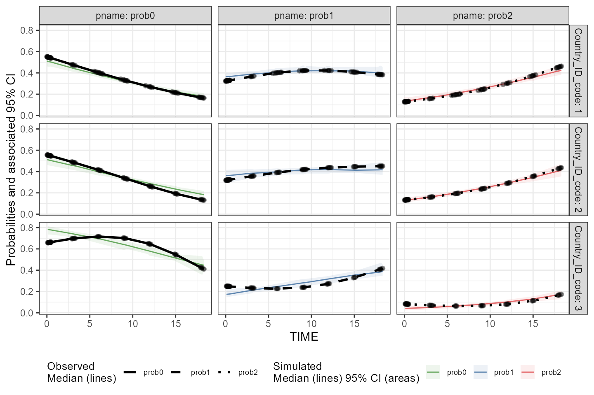
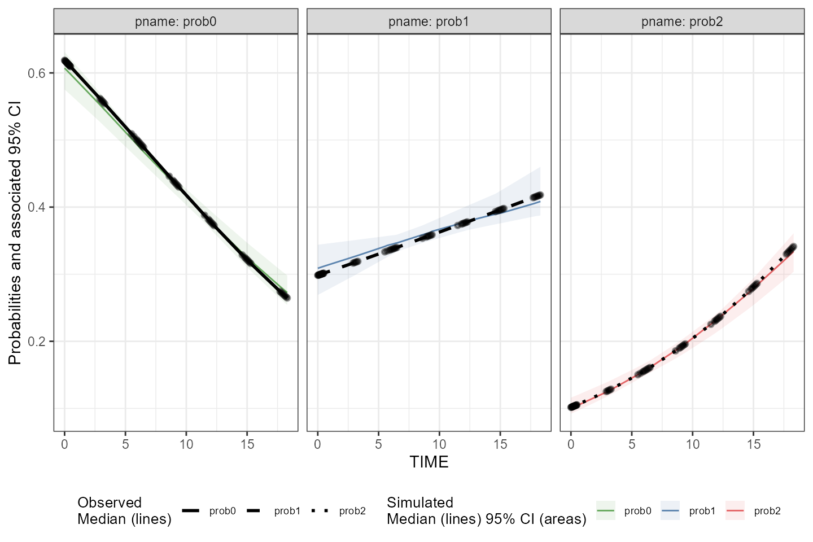
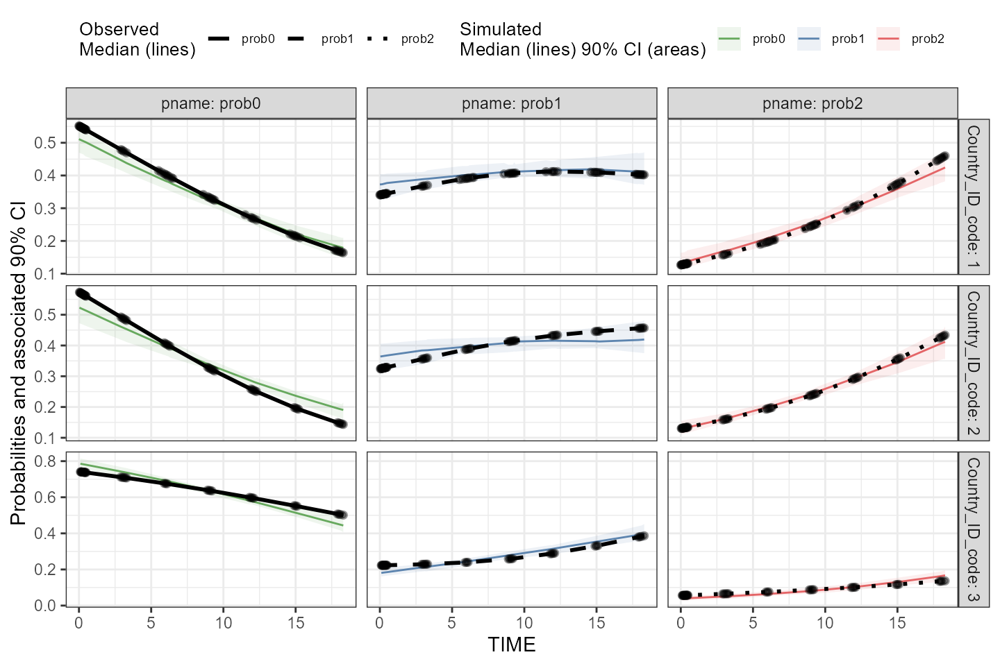
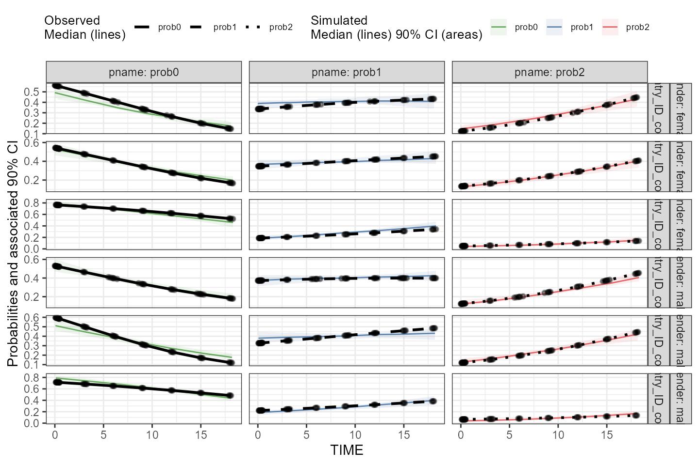

Introduction
The tidyvpc package allows users to generate VPC for categorical data using both binning and binless methods.
Data Setup
The tidyvpc package has specific ordering requirements for the observed and simulated input datasets.
Observed data must be ordered by: Subject-ID, IVAR (Time)
Simulated data must be ordered by: Replicate, Subject-ID, IVAR (Time)
The example datasets we’ll use in this vignette are correctly ordered, but we will repeat this step for clarity.
library(tidyvpc)
library(data.table)
obs_cat_data <- tidyvpc::obs_cat_data
sim_cat_data <- tidyvpc::sim_cat_data
obs_cat_data <- obs_cat_data[order(PID_code, agemonths)]
sim_cat_data <- sim_cat_data[order(Replicate, PID_code, IVAR)]Binning
All traditional binning methods are available to the user, see
?binning. Note, additional methods available in the
classInt package can be provided in the bin
argument.
The syntax for a continuous VPC and categorical VPC are nearly
identical, except in vpcstats() function, specify
vpc.type = "categorical"
In the example below, we’ll bin directly on our (rounded) x variable, agemonths.
vpc <- observed(obs_cat_data, x = agemonths, yobs = zlencat) %>%
simulated(sim_cat_data, ysim = DV) %>%
binning(bin = round(agemonths, 0)) %>%
vpcstats(vpc.type = "categorical")
plot(vpc, facet = TRUE, legend.position = "bottom", facet.scales = "fixed")
Let’s explore stratification and provide a different binning method
in the following VPC. We can also change our confidence level and
quantile type for the prediction intervals (shaded area) by specifying
conf.level = .9 and quantile.type = 6.
Note: Phoenix uses quantile.type = 6 while tidyvpc
uses quantile.type = 7 by default.
vpc <- observed(obs_cat_data, x = agemonths, yobs = zlencat) %>%
simulated(sim_cat_data, ysim = DV) %>%
stratify(~ Country_ID_code) %>%
binning(bin = "pam", nbins = 6) %>%
vpcstats(vpc.type = "categorical", conf.level = .9, quantile.type = 6)
plot(vpc, facet = TRUE, legend.position = "bottom", facet.scales = "fixed")
Binless
A binless approach was developed to fit categorical data using
gam(family = "binomial"). Users can optimize smoothing
parameter for the binless fit using
binless(optimize = TRUE) (default), in which case, the
optimized smoothing parameters for each category of DV in the observed
data will be automatically defined by minimization of AIC.
Optimize sp using AIC
vpc <- observed(obs_cat_data, x = agemonths, yobs = zlencat) %>%
simulated(sim_cat_data, ysim = DV) %>%
binless(optimize = TRUE) %>%
vpcstats(vpc.type = "categorical", quantile.type = 6)
plot(vpc, facet = TRUE, legend.position = "bottom", facet.scales = "fixed")
We can increase the interval used to optimize value of smoothing
parameters using the optimization.interval argument of the
binless() function.
vpc <- observed(obs_cat_data, x = agemonths, yobs = zlencat) %>%
simulated(sim_cat_data, ysim = DV) %>%
stratify(~ Country_ID_code) %>%
binless(optimize = TRUE, optimization.interval = c(0,300)) %>%
vpcstats(vpc.type = "categorical")
plot(vpc, facet = TRUE, legend.position = "bottom", facet.scales = "fixed")
User-defined sp
Alternatively, users may supply their own smoothing parameters using
the sp argument.
This method uses gam with sp values specified for each
level of categorical DV.
Note: The sp argument must be a list of the same
length/order corresponding to the unique values of our categorical DV.
See additional details in the next section, if stratification is
specified.
sp_user <- list(p0 = 300,
p1 = 50,
p2 = 100)
vpc <- observed(obs_cat_data, x = agemonths, yobs = zlencat) %>%
simulated(sim_cat_data, ysim = DV) %>%
binless(optimize = FALSE, sp = sp_user) %>%
vpcstats(vpc.type = "categorical", quantile.type = 6)
plot(vpc, facet = TRUE, legend.position = "bottom", facet.scales = "fixed")
Specifying sp for each strata
One stratification variable
If providing user-supplied sp parameters with one or more stratification variables, the order of sp should be specified as unique combination of strata + DV, in ascending order.
sort(unique(obs_cat_data$Country_ID_code))
#> [1] 1 2 3
sort(unique(obs_cat_data$zlencat))
#> [1] 0 1 2
user_sp <- list(
Country1_prob0 = 100,
Country1_prob1 = 3,
Country1_prob2 = 4,
Country2_prob0 = 90,
Country2_prob1 = 3,
Country2_prob2 = 4,
Country3_prob0 = 55,
Country3_prob1 = 3,
Country3_prob2 = 200)Generate VPC
vpc <- observed(obs_cat_data, x = agemonths, yobs = zlencat) %>%
simulated(sim_cat_data, ysim = DV) %>%
stratify(~ Country_ID_code) %>%
binless(optimize = FALSE, sp = user_sp) %>%
vpcstats(vpc.type = "categorical"
, conf.level = 0.9
, quantile.type = 6
)
plot(vpc, facet = TRUE)
Multiple stratification variables
If supplying sp argument with one or more stratification
variables, the order of elements in the list provided should be the
following: strat1, strat2, …, DV.
Add dummy strat variable to obs_cat_data:
library(dplyr)
#>
#> Attaching package: 'dplyr'
#> The following objects are masked from 'package:data.table':
#>
#> between, first, last
#> The following objects are masked from 'package:stats':
#>
#> filter, lag
#> The following objects are masked from 'package:base':
#>
#> intersect, setdiff, setequal, union
obs_cat_data <- obs_cat_data %>%
mutate(gender = ifelse(PID_code %% 2 == 1, "male", "female"))
vpc <- observed(obs_cat_data, x = agemonths, yobs = zlencat) %>%
simulated(sim_cat_data, ysim = DV) %>%
stratify(~ gender + Country_ID_code)View ordering of stratification variables and DV:
sort(unique(obs_cat_data$gender))
#> [1] "female" "male"
sort(unique(obs_cat_data$Country_ID_code))
#> [1] 1 2 3
sort(unique(obs_cat_data$zlencat))
#> [1] 0 1 2We first specified gender, then
Country_ID_code in above formula, so our list of smoothing
parameters provided to sp argument should be ordered
as:
user_sp <- list(
female.1.prob0 = 1,
female.1.prob1 = 3,
female.1.prob2 = 9,
female.2.prob0 = 5,
female.2.prob1 = 10,
female.2.prob2 = 12,
female.3.prob0 = 33,
female.3.prob1 = 44,
female.3.prob2 = 88,
male.1.prob0 = 4,
male.1.prob1 = 12,
male.1.prob2 = 15,
male.2.prob0 = 800,
male.2.prob1 = 19,
male.2.prob2 = 28,
male.3.prob0 = 22,
male.3.prob1 = 88,
male.3.prob2 = 11
)Generate VPC
vpc <- observed(obs_cat_data, x = agemonths, yobs = zlencat) %>%
simulated(sim_cat_data, ysim = DV) %>%
stratify(~ gender + Country_ID_code) %>%
binless(optimize = FALSE, sp = user_sp) %>%
vpcstats(vpc.type = "categorical", conf.level = 0.9, quantile.type = 6)
plot(vpc, facet=TRUE)